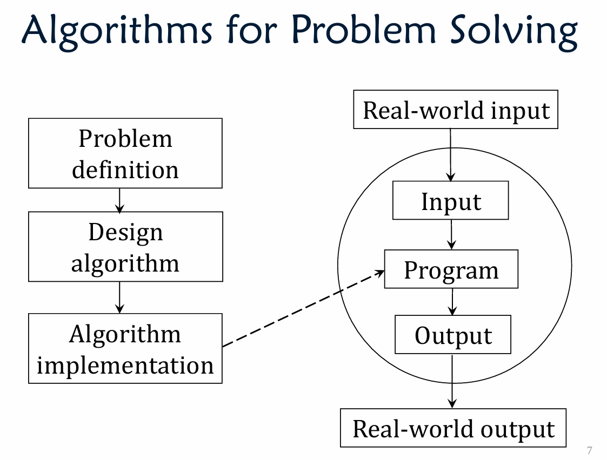

Lecture 1 DSAA Introduction
Algorithm
a well defined sequence of steps for solving a computational problem.
- It produces the correct output
- It uses basic steps / defined operations
- It finishes in finite time

Data Structure
- A way of organizing data objects for efficient usage
- Building blocks for designing algorithms
Why so many data structures?
They support different operations, and with different time complexities
Which data structure is better?
Depends on the frequency of operations used in your algorithm
E.g., it is fast for the most frequent operation in your algorithm
Algorithmic Design Techniques
- Incremental technique
- Recursive technique (Divide and conquer)
Iteration(迭代)
When we encounter a problem that requires repetition, we often use iteration – i.e., some type of loop
Sample problem: printing the series of integers from to , where .
printSeries$(1,8)$ should print the following
Iterative solution:
1 | public static void printSeries(int n1, int n2){ |
Recursion(递归)
An alternative approach to problems that require repetition is to solve them using recursion
A recursive method is a method that calls itself
Applying this approach to the printSeries problem:
1 | public static void printSeries(int n1, int n2){ |
Base Case and Recursive Case
When we use recursion, we solve a problem by reducing it to a simpler problem of the same kind
We keep doing this until we reach a problem that is simple enough to be solved directly.
The simplest problem is known as the base case
The base case stops the recursion, because it does not make another call to the method
If the base case hasn’t been reached, we execute the recursive case
The recursive case:
- Reduces the overall problem to one or more simpler problems of the same kind
- Makes recursive calls to solve the simpler problems.
Thinking Recursively
When solving a problem using recursion, ask yourself these questions:
- How can I break this problem down into one or
more smaller subproblems?- Make recursive method calls to solve the
subproblems
- Make recursive method calls to solve the
- What are the base cases?
- i.e., which subproblems are small enough to
solve directly?
- i.e., which subproblems are small enough to
- Do I need to combine the solutions to the
subproblems? If so, how should I do so?
1 | void I_Know_Recursion() |